{% include "toc.njk" %}

<div class="col-md-9 order-md-first">

    <h1 id="visualization-top" class="title">Data Visualization</h1>

    <p>A picture is worth a thousand words. In machine learning, we usually handle
        high-dimensional data, which is impossible to draw on display directly. But
        a variety of statistical plots are tremendously valuable for us to grasp
        the characteristics of many data points. Smile provides data visualization tools
        such as plots and maps for researchers to understand information more easily and quickly.</p>

    <h2 id="scatter" class="title">Scatter Plot</h2>

    <p>A scatter plot displays data as a collection of points. Points can be color-coded by
        class label, which is useful for classification tasks.</p>

    <p>Use <a href="api/java/smile/plot/swing/ScatterPlot.html"><code>ScatterPlot</code></a> (Scala: <code>plot</code>) with a mark character and optional class labels for color coding.</p>

    <p>The legends are as follows.</p>
    <ul>
        <li> <code>.</code> : dot
        <li> <code>+</code> : +
        <li> <code>-</code> : -
        <li> <code>|</code> : |
        <li> <code>*</code> : star
        <li> <code>x</code> : x
        <li> <code>o</code> : circle
        <li> <code>O</code> : large circle
        <li> <code>@</code> : solid circle
        <li> <code>#</code> : large solid circle
        <li> <code>s</code> : square
        <li> <code>S</code> : large square
        <li> <code>q</code> : solid square
        <li> <code>Q</code> : large solid square
    </ul>
    <p>For any other char, the data point will be drawn as a dot.</p>

    <p>In Java, plot factories return a shape (for example <code>ScatterPlot</code>)
        whose <code>figure()</code> builds a <a href="api/java/smile/plot/swing/Figure.html"><code>Figure</code></a>.
        Call <code>figure.show()</code> (or wrap the figure in
        <a href="api/java/smile/plot/swing/FigurePane.html"><code>FigurePane</code></a>)
        to open a desktop window. Scala helpers such as <code>plot</code> return a
        <code>Canvas</code>; display it with <code>show(canvas)</code> from
        <code>smile.plot</code>. Right-click the window for print, title, and axis options.</p>

    <p>For both 2D and 3D plots, zoom with the mouse wheel. For 2D plots, double-click
        then drag to pan, or drag a rectangle to zoom into a region. For 3D plots,
        drag to rotate the view.</p>

    <div class="code-playground glass" data-lang="java">
  <div class="playground-toolbar">
    <button type="button" class="lang-tab is-active" data-lang="java" data-pane="pg-2-0">Java</button>
    <button type="button" class="lang-tab" data-lang="scala" data-pane="pg-2-1">Scala</button>
    <span class="toolbar-spacer"></span>
    <button type="button" class="btn btn-ghost btn-sm playground-copy">Copy</button>
    {% include "components/playground-extra-actions.njk" %}
  </div>
    <div id="pg-2-0" class="hero-pane">
      <pre class="playground-source language-java"><code class="language-java">
    import smile.io.Read;
    import smile.plot.swing.ScatterPlot;

    var iris = Read.arff("data/weka/iris.arff");
    var figure = ScatterPlot.of(iris, "sepallength", "sepalwidth", "class", '*').figure();
    figure.setAxisLabels("sepallength", "sepalwidth");
    figure.show();
          </code></pre>
    </div>
    <div id="pg-2-1" class="hero-pane" hidden>
      <pre class="playground-source language-scala"><code class="language-scala">
    val iris = read.arff("data/weka/iris.arff")
    val canvas = plot(iris, "sepallength", "sepalwidth", "class", '*')
    canvas.figure().setAxisLabels("sepallength", "sepalwidth")
    show(canvas)
    </code></pre>
    </div>
  <div class="playground-editor" hidden></div>
</div>

    <p>In this example, we plot the first two columns of Iris data. We use the class
        label for legend and color coding.</p>

    <div style="width: 100%; display: inline-block; text-align: center;">
        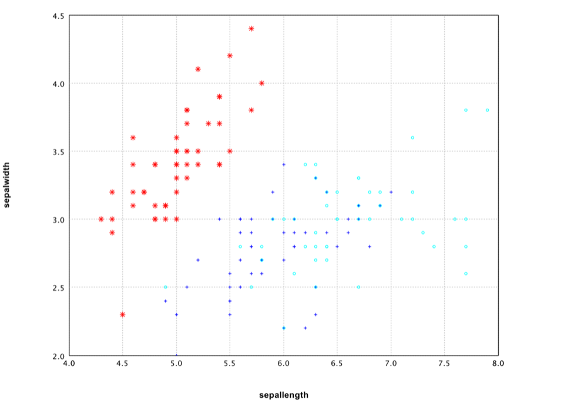
        <div class="caption" style="min-width: 480px;">Iris 2D Scatter Plot</div>
    </div>

    <p>It is also easy to draw a 3D plot.</p>

    <div class="code-playground glass" data-lang="java">
  <div class="playground-toolbar">
    <button type="button" class="lang-tab is-active" data-lang="java" data-pane="pg-3-0">Java</button>
    <button type="button" class="lang-tab" data-lang="scala" data-pane="pg-3-1">Scala</button>
    <span class="toolbar-spacer"></span>
    <button type="button" class="btn btn-ghost btn-sm playground-copy">Copy</button>
    {% include "components/playground-extra-actions.njk" %}
  </div>
    <div id="pg-3-0" class="hero-pane">
      <pre class="playground-source language-java"><code class="language-java">
    var figure = ScatterPlot.of(iris, "sepallength", "sepalwidth", "petallength", "class", '*').figure();
    figure.setAxisLabels("sepallength", "sepalwidth", "petallength");
    figure.show();
          </code></pre>
    </div>
    <div id="pg-3-1" class="hero-pane" hidden>
      <pre class="playground-source language-scala"><code class="language-scala">
    val canvas = plot(iris, "sepallength", "sepalwidth", "petallength", "class", '*')
    canvas.figure().setAxisLabels("sepallength", "sepalwidth", "petallength")
    show(canvas)
    </code></pre>
    </div>
  <div class="playground-editor" hidden></div>
</div>

    <div style="width: 100%; display: inline-block; text-align: center;">
        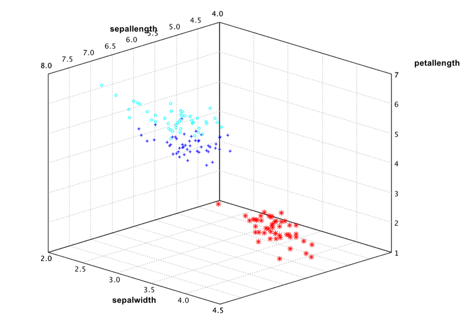
        <div class="caption" style="min-width: 480px;">Iris 3D Scatter Plot</div>
    </div>

    <p>However, the Iris data has four attributes. So even 3D plot is not sufficient to see the
        whole picture. A general practice is plot all the attribute pairs. For example,</p>

    <div class="code-playground glass" data-lang="java">
  <div class="playground-toolbar">
    <button type="button" class="lang-tab is-active" data-lang="java" data-pane="pg-4-0">Java</button>
    <button type="button" class="lang-tab" data-lang="scala" data-pane="pg-4-1">Scala</button>
    <span class="toolbar-spacer"></span>
    <button type="button" class="btn btn-ghost btn-sm playground-copy">Copy</button>
    {% include "components/playground-extra-actions.njk" %}
  </div>
    <div id="pg-4-0" class="hero-pane">
      <pre class="playground-source language-java"><code class="language-java">
    var pane = MultiFigurePane.splom(iris, '*', "class");
    pane.window();
          </code></pre>
    </div>
    <div id="pg-4-1" class="hero-pane" hidden>
      <pre class="playground-source language-scala"><code class="language-scala">
    show(splom(iris, '*', "class"))
    </code></pre>
    </div>
  <div class="playground-editor" hidden></div>
</div>

    <div style="width: 100%; display: inline-block; text-align: center;">
        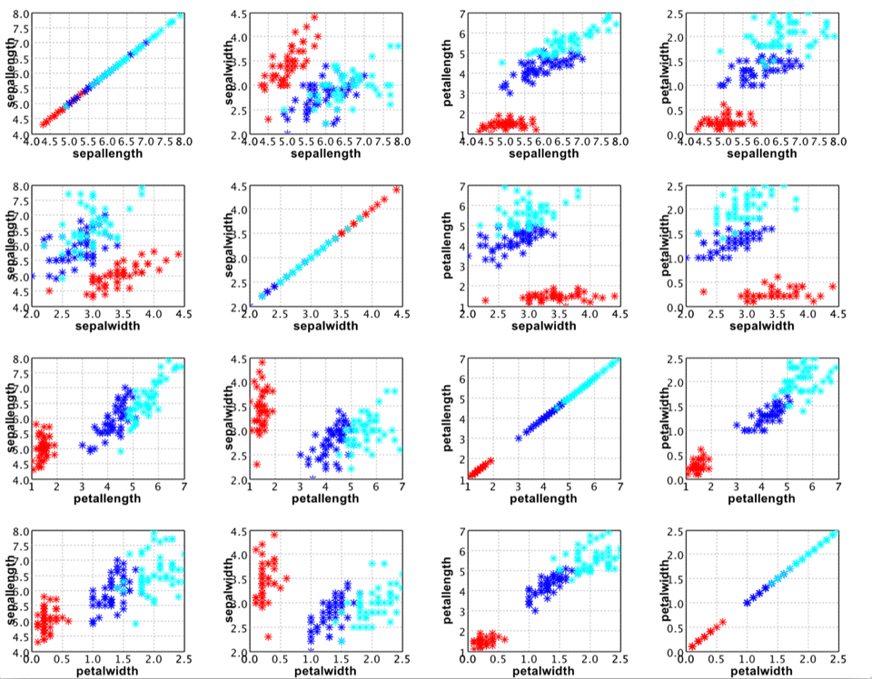
        <div class="caption" style="min-width: 480px;">Iris Plot of All Attribute Pairs</div>
    </div>

    <h2 id="line" class="title">Line Chart</h2>

    <p>A line chart connects points by straight lines.</p>

    <p>Use <a href="api/java/smile/plot/swing/LinePlot.html"><code>LinePlot</code></a> (Scala: <code>line</code>) to connect points with a stroke style and color.</p>

    <p>Let's draw a heart with it!</p>
    <div class="code-playground glass" data-lang="java">
  <div class="playground-toolbar">
    <button type="button" class="lang-tab is-active" data-lang="java" data-pane="pg-6-0">Java</button>
    <button type="button" class="lang-tab" data-lang="scala" data-pane="pg-6-1">Scala</button>
    <span class="toolbar-spacer"></span>
    <button type="button" class="btn btn-ghost btn-sm playground-copy">Copy</button>
    {% include "components/playground-extra-actions.njk" %}
  </div>
    <div id="pg-6-0" class="hero-pane">
      <pre class="playground-source language-java"><code class="language-java">
    import java.awt.Color;
    import smile.plot.swing.LinePlot;
    import static java.lang.Math.*;

    double[][] heart = new double[200][2];
    for (int i = 0; i < 200; i++) {
        double t = PI * (i - 100) / 100;
        heart[i][0] = 16 * pow(sin(t), 3);
        heart[i][1] = 13 * cos(t) - 5 * cos(2*t) - 2 * cos(3*t) - cos(4*t);
    }
    var figure = LinePlot.of(heart, Color.RED).figure();
    figure.show();
          </code></pre>
    </div>
    <div id="pg-6-1" class="hero-pane" hidden>
      <pre class="playground-source language-scala"><code class="language-scala">
    val heart = -314 to 314 map { i =>
      val t = i / 100.0
      val x = 16 * pow(sin(t), 3)
      val y = 13 * cos(t) - 5 * cos(2*t) - 2 * cos(3*t) - cos(4*t)
      Array(x, y)
    }
    show(line(heart.toArray, color = RED))
    </code></pre>
    </div>
  <div class="playground-editor" hidden></div>
</div>

    <div style="width: 100%; display: inline-block; text-align: center;">
        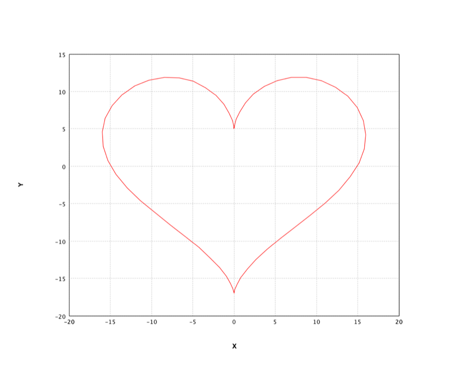
    </div>

    <h2 id="box" class="title">Box Plot</h2>

    <p>The box plot is a standardized way of displaying the distribution of data
        based on the five number summary: minimum, first quartile, median,
        third quartile, and maximum.</p>

    <p>Box plots can be useful to display differences between populations without
        making any assumptions of the underlying statistical distribution: they are
        non-parametric. The spacings between the different parts of the box help
        indicate the degree of dispersion (spread) and skewness in the data, and
        identify outliers.</p>

    <p>Use <a href="api/java/smile/plot/swing/BoxPlot.html"><code>BoxPlot</code></a> (Scala: <code>boxplot</code>). Each row of the data matrix becomes one box; optional labels name the groups.</p>

    <p>Note that the parameter <code>data</code> is a matrix of which each row to
        create a box plot.</p>

    <div class="code-playground glass" data-lang="java">
  <div class="playground-toolbar">
    <button type="button" class="lang-tab is-active" data-lang="java" data-pane="pg-8-0">Java</button>
    <button type="button" class="lang-tab" data-lang="scala" data-pane="pg-8-1">Scala</button>
    <span class="toolbar-spacer"></span>
    <button type="button" class="btn btn-ghost btn-sm playground-copy">Copy</button>
    {% include "components/playground-extra-actions.njk" %}
  </div>
    <div id="pg-8-0" class="hero-pane">
      <pre class="playground-source language-java"><code class="language-java">
    String[] labels = ((smile.data.measure.NominalScale) iris.schema().field("class").measure()).levels();
    double[][] data = new double[labels.length][];
    for (int i = 0; i < data.length; i++) {
        var label = labels[i];
        data[i] = iris.stream().
              filter(row -> row.getString("class").equals(label)).
              mapToDouble(row -> row.getFloat("sepallength")).
              toArray();
    }
    var figure = new BoxPlot(data, labels).figure();
    figure.setAxisLabels("", "sepallength");
    figure.show();
          </code></pre>
    </div>
    <div id="pg-8-1" class="hero-pane" hidden>
      <pre class="playground-source language-scala"><code class="language-scala">
    val groups = (iris("sepallength").toDoubleArray zip iris("class").toStringArray).groupBy(_._2)
    val labels = groups.keys.toArray
    val data = groups.values.map { a => a.map(_._1) }.toArray
    val canvas = boxplot(data, labels)
    canvas.figure().setAxisLabels("", "sepallength")
    show(canvas)
    </code></pre>
    </div>
  <div class="playground-editor" hidden></div>
</div>

    <div style="width: 100%; display: inline-block; text-align: center;">
        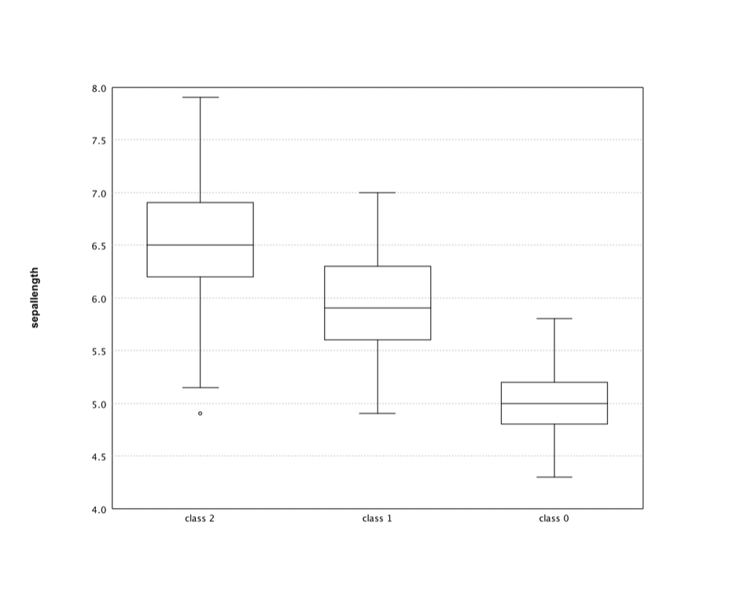
    </div>

    <h2 id="histogram" class="title">Histogram</h2>

    <p>A histogram is a graphical representation of the distribution of numerical data.
        The range of values is divided into a series of consecutive, non-overlapping intervals/bins.
        The bins must be adjacent, and are usually equal size.</p>

    <p>Use <a href="api/java/smile/plot/swing/Histogram.html"><code>Histogram</code></a> (Scala: <code>hist</code>),
        which returns a <code>BarPlot</code>. Pass bin count <code>k</code> (default 10), or an array of bin
        breakpoints, and whether to plot probabilities.</p>

    <p>Let's apply the histogram to an interesting data: the wisdom of crowds.
        The original experiment took place about a hundred years ago at a county fair in England.
        The fair had a guess the weight of the ox contest. Francis Galton calculated the average
        of all guesses, which is right to within one pound.</p>

    <p>Recently, NPR Planet Money ran the experiment again. NPR posted a couple of pictures of a cow
        (named Penelope) and asked people to guess her weight. They got over 17,000 responses. The average
        of guesses was 1,287 pounds, which is pretty close to Penelope's weight 1,355 pounds. </p>

    <div class="code-playground glass" data-lang="java">
  <div class="playground-toolbar">
    <button type="button" class="lang-tab is-active" data-lang="java" data-pane="pg-10-0">Java</button>
    <button type="button" class="lang-tab" data-lang="scala" data-pane="pg-10-1">Scala</button>
    <span class="toolbar-spacer"></span>
    <button type="button" class="btn btn-ghost btn-sm playground-copy">Copy</button>
    {% include "components/playground-extra-actions.njk" %}
  </div>
    <div id="pg-10-0" class="hero-pane">
      <pre class="playground-source language-java"><code class="language-java">
    var cow = Read.csv("data/stat/cow.txt").column("V1").toDoubleArray();
    var figure = Histogram.of(cow, 50, true).figure();
    figure.setAxisLabels("Weight", "Probability");
    figure.show();
          </code></pre>
    </div>
    <div id="pg-10-1" class="hero-pane" hidden>
      <pre class="playground-source language-scala"><code class="language-scala">
    val cow = read.csv("data/stat/cow.txt", header=false)("V1").toDoubleArray
    val canvas = hist(cow, 50)
    canvas.figure().setAxisLabels("Weight", "Probability")
    show(canvas)
    </code></pre>
    </div>
  <div class="playground-editor" hidden></div>
</div>

    <div style="width: 100%; display: inline-block; text-align: center;">
        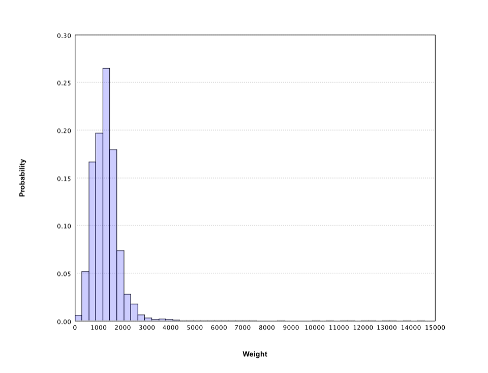
    </div>

    <p>The histogram gives a rough sense of the distribution of crowd guess, which has a long tail.
        Filter out the weights over 3500 pounds, the histogram shows more details.</p>

    <div class="code-playground glass" data-lang="java">
  <div class="playground-toolbar">
    <button type="button" class="lang-tab is-active" data-lang="java" data-pane="pg-11-0">Java</button>
    <button type="button" class="lang-tab" data-lang="scala" data-pane="pg-11-1">Scala</button>
    <span class="toolbar-spacer"></span>
    <button type="button" class="btn btn-ghost btn-sm playground-copy">Copy</button>
    {% include "components/playground-extra-actions.njk" %}
  </div>
    <div id="pg-11-0" class="hero-pane">
      <pre class="playground-source language-java"><code class="language-java">
    var figure = Histogram.of(Arrays.stream(cow).filter(w -> w <= 3500).toArray(), 50, true).figure();
    figure.setAxisLabels("Weight", "Probability");
    figure.show();
          </code></pre>
    </div>
    <div id="pg-11-1" class="hero-pane" hidden>
      <pre class="playground-source language-scala"><code class="language-scala">
    val canvas = hist(cow.filter(_ <= 3500), 50)
    canvas.figure().setAxisLabels("Weight", "Probability")
    show(canvas)
    </code></pre>
    </div>
  <div class="playground-editor" hidden></div>
</div>

    <div style="width: 100%; display: inline-block; text-align: center;">
        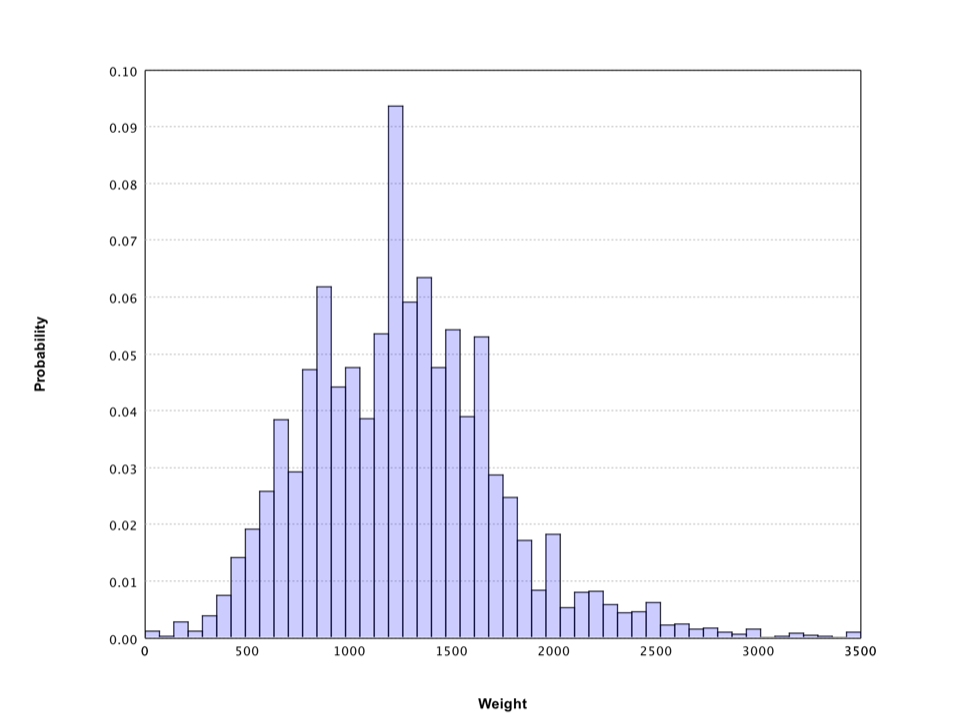
    </div>

    <p>Smile also supports histograms that display the distribution of 2-dimensional data.</p>

    <p>Use <a href="api/java/smile/plot/swing/Histogram3D.html"><code>Histogram3D</code></a> (Scala: <code>hist3</code>) for bivariate distributions, with bin counts and an optional color palette.</p>

    <p>Here we generate a data set from a 2-dimensional Gaussian distribution.</p>

    <div class="code-playground glass" data-lang="java">
  <div class="playground-toolbar">
    <button type="button" class="lang-tab is-active" data-lang="java" data-pane="pg-13-0">Java</button>
    <button type="button" class="lang-tab" data-lang="scala" data-pane="pg-13-1">Scala</button>
    <span class="toolbar-spacer"></span>
    <button type="button" class="btn btn-ghost btn-sm playground-copy">Copy</button>
    {% include "components/playground-extra-actions.njk" %}
  </div>
    <div id="pg-13-0" class="hero-pane">
      <pre class="playground-source language-java"><code class="language-java">
    import smile.plot.swing.Histogram3D;
    import smile.stat.distribution.MultivariateGaussianDistribution;
    import smile.tensor.DenseMatrix;
    import java.util.stream.Stream;

    double[] mu = {0.0, 0.0};
    double[][] v = { {1.0, 0.6}, {0.6, 2.0} };
    var gauss = new MultivariateGaussianDistribution(mu, DenseMatrix.of(v));
    var data = Stream.generate(gauss::rand).limit(10000).toArray(double[][]::new);
    var figure = Histogram3D.of(data, 50, false).figure();
    figure.show();
          </code></pre>
    </div>
    <div id="pg-13-1" class="hero-pane" hidden>
      <pre class="playground-source language-scala"><code class="language-scala">
    val gauss = new MultivariateGaussianDistribution(Array(0.0, 0.0), DenseMatrix.of(Array(Array(1.0, 0.6), Array(0.6, 2.0))))
    val data = (0 until 10000) map { i: Int => gauss.rand }
    show(hist3(data.toArray, 50, 50))
    </code></pre>
    </div>
  <div class="playground-editor" hidden></div>
</div>

    <p>The corresponding histogram looks like</p>

    <div style="width: 100%; display: inline-block; text-align: center;">
        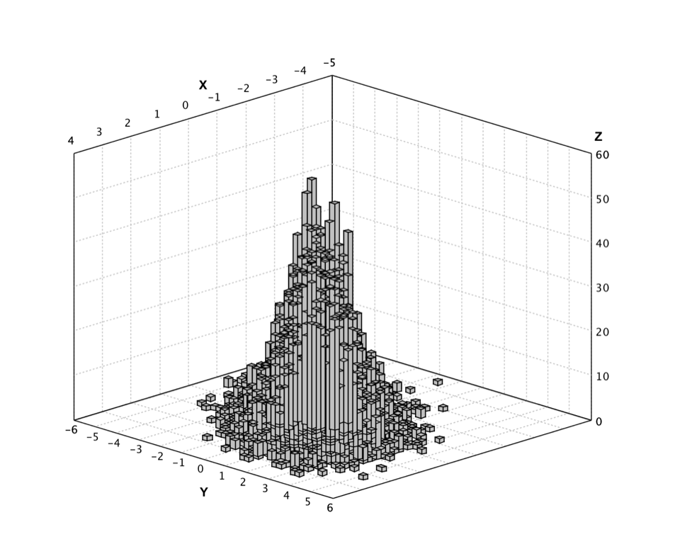
    </div>

    <h2 id="qq" class="title">Q-Q Plot</h2>

    <p>A Q–Q plot ("Q" stands for quantile) is a probability plot for comparing two probability distributions
        by plotting their quantiles against each other. A point (x, y) on the plot corresponds to one of
        the quantiles of the second distribution (y-coordinate) plotted against the same quantile of
        the first distribution (x-coordinate).</p>

    <p>Use <a href="api/java/smile/plot/swing/QQPlot.html"><code>QQPlot</code></a> (Scala: <code>qqplot</code>) to compare a sample to a reference distribution (default: standard Gaussian) or to another sample.</p>

    <p>Smile supports the Q-Q plot of samples to a given distribution and also of two sample sets.
        The second distribution/samples is optional. If missing, we assume it the standard Gaussian distribution.</p>

    <p>In what follows, we generate a random sample set from standard Gaussian distribution and draw its Q-Q plot.</p>

    <div class="code-playground glass" data-lang="java">
  <div class="playground-toolbar">
    <button type="button" class="lang-tab is-active" data-lang="java" data-pane="pg-15-0">Java</button>
    <button type="button" class="lang-tab" data-lang="scala" data-pane="pg-15-1">Scala</button>
    <span class="toolbar-spacer"></span>
    <button type="button" class="btn btn-ghost btn-sm playground-copy">Copy</button>
    {% include "components/playground-extra-actions.njk" %}
  </div>
    <div id="pg-15-0" class="hero-pane">
      <pre class="playground-source language-java"><code class="language-java">
    var gauss = new GaussianDistribution(0.0, 1.0);
    var data = DoubleStream.generate(gauss::rand).limit(1000).toArray();
    var figure = QQPlot.of(data).figure();
    figure.show();
          </code></pre>
    </div>
    <div id="pg-15-1" class="hero-pane" hidden>
      <pre class="playground-source language-scala"><code class="language-scala">
    val gauss = new GaussianDistribution(0.0, 1.0)
    val data = (0 until 1000) map { i: Int => gauss.rand }
    show(qqplot(data.toArray))
    </code></pre>
    </div>
  <div class="playground-editor" hidden></div>
</div>

    <p>In fact, this is also a good visual way to verify the quality of our random number generator.</p>

    <div style="width: 100%; display: inline-block; text-align: center;">
        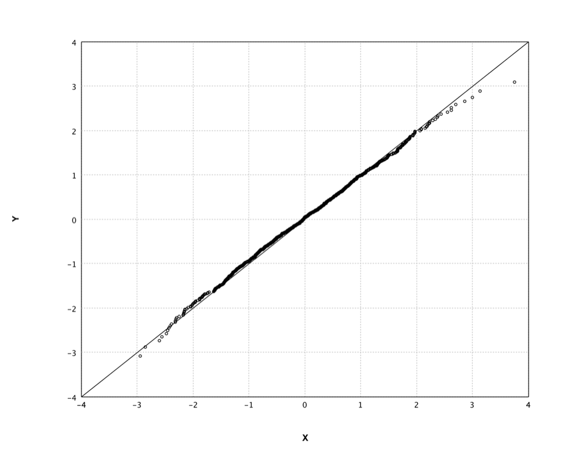
    </div>

    <h2 id="heatmap" class="title">Heatmap</h2>

    <p>A heat map is a graphical representation of data where the values in a matrix are represented as colors.
        In cluster analysis, researchers often employs the heat map by permuting the rows and the columns
        of a matrix to place similar values near each other according to the clustering.</p>

    <p>Use <a href="api/java/smile/plot/swing/Heatmap.html"><code>Heatmap</code></a> (Scala: <code>heatmap</code>).
        Provide the matrix <code>z</code> and either a palette or a color count <code>k</code>;
        optional ascending <code>x</code>/<code>y</code> coordinates or row/column labels locate the cells.</p>

    <p>In what follows, we display the heat map of a matrix. We start with a small <code>4 x 4</code> matrix and
        enlarge it with bicubic interpolation. We also use the helper class <code>Palette</code> to generate the color
        scheme. This class provides many other color schemes.</p>

    <div class="code-playground glass" data-lang="java">
  <div class="playground-toolbar">
    <button type="button" class="lang-tab is-active" data-lang="java" data-pane="pg-17-0">Java</button>
    <button type="button" class="lang-tab" data-lang="scala" data-pane="pg-17-1">Scala</button>
    <span class="toolbar-spacer"></span>
    <button type="button" class="btn btn-ghost btn-sm playground-copy">Copy</button>
    {% include "components/playground-extra-actions.njk" %}
  </div>
    <div id="pg-17-0" class="hero-pane">
      <pre class="playground-source language-java"><code class="language-java">
    import smile.interpolation.BicubicInterpolation;
    import smile.plot.swing.Heatmap;
    import smile.plot.swing.Palette;

    // the matrix to display
    double[][] z = {
      {1.0, 2.0, 4.0, 1.0},
      {6.0, 3.0, 5.0, 2.0},
      {4.0, 2.0, 1.0, 5.0},
      {5.0, 4.0, 2.0, 3.0}
    };

    // make the matrix larger with bicubic interpolation
    double[] x = {0.0, 1.0, 2.0, 3.0};
    double[] y = {0.0, 1.0, 2.0, 3.0};
    var bicubic = new BicubicInterpolation(x, y, z);
    var Z = new double[101][101];
    for (int i = 0; i <= 100; i++) {
      for (int j = 0; j <= 100; j++)
        Z[i][j] = bicubic.interpolate(i * 0.03, j * 0.03);
    }

    var figure = Heatmap.of(Z, Palette.jet(256)).figure();
    figure.show();
          </code></pre>
    </div>
    <div id="pg-17-1" class="hero-pane" hidden>
      <pre class="playground-source language-scala"><code class="language-scala">
    // the matrix to display
    val z = Array(
      Array(1.0, 2.0, 4.0, 1.0),
      Array(6.0, 3.0, 5.0, 2.0),
      Array(4.0, 2.0, 1.0, 5.0),
      Array(5.0, 4.0, 2.0, 3.0)
    )

    // make the matrix larger with bicubic interpolation
    val x = Array(0.0, 1.0, 2.0, 3.0)
    val y = Array(0.0, 1.0, 2.0, 3.0)
    val bicubic = new BicubicInterpolation(x, y, z)
    val Z = Array.ofDim[Double](101, 101)
    for (i <- 0 to 100) {
      for (j <- 0 to 100)
        Z(i)(j) = bicubic.interpolate(i * 0.03, j * 0.03)
    }

    show(heatmap(Z, Palette.jet(256)))
    </code></pre>
    </div>
  <div class="playground-editor" hidden></div>
</div>

    <div style="width: 100%; display: inline-block; text-align: center;">
        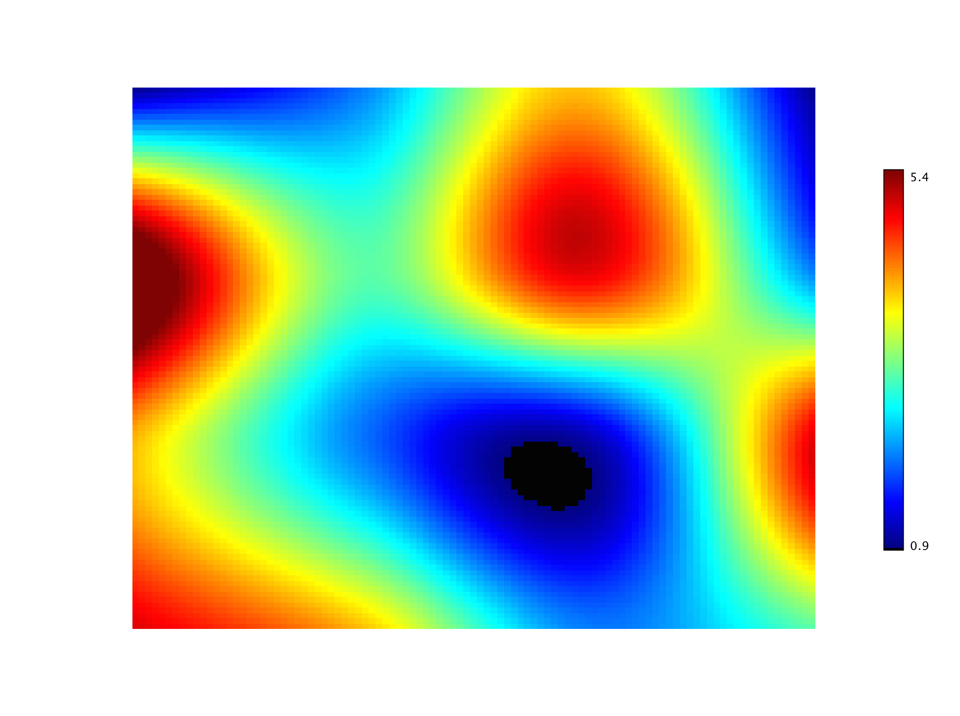
    </div>

    <h3 id="spy">Sparse Matrix Spy</h3>

    <p>A special case of heat map is to draw the sparsity pattern of a matrix.</p>

    <p>Use <a href="api/java/smile/plot/swing/SparseMatrixPlot.html"><code>SparseMatrixPlot</code></a> (Scala: <code>spy</code>) to draw the sparsity pattern of a <code>SparseMatrix</code>.</p>

    <p>The structure of sparse matrix is critical in solving linear systems.</p>

    <div class="code-playground glass" data-lang="java">
  <div class="playground-toolbar">
    <button type="button" class="lang-tab is-active" data-lang="java" data-pane="pg-19-0">Java</button>
    <button type="button" class="lang-tab" data-lang="scala" data-pane="pg-19-1">Scala</button>
    <span class="toolbar-spacer"></span>
    <button type="button" class="btn btn-ghost btn-sm playground-copy">Copy</button>
    {% include "components/playground-extra-actions.njk" %}
  </div>
    <div id="pg-19-0" class="hero-pane">
      <pre class="playground-source language-java"><code class="language-java">
    import smile.plot.swing.SparseMatrixPlot;
    import smile.tensor.SparseMatrix;

    var sparse = SparseMatrix.text(java.nio.file.Paths.get("data/matrix/mesh2em5.txt"));
    var figure = SparseMatrixPlot.of(sparse).figure();
    figure.setTitle("mesh2em5");
    figure.show();
          </code></pre>
    </div>
    <div id="pg-19-1" class="hero-pane" hidden>
      <pre class="playground-source language-scala"><code class="language-scala">
    val sparse = SparseMatrix.text(java.nio.file.Paths.get("data/matrix/mesh2em5.txt"))
    val canvas = spy(sparse)
    canvas.figure().setTitle("mesh2em5")
    show(canvas)
    </code></pre>
    </div>
  <div class="playground-editor" hidden></div>
</div>

    <div style="width: 100%; display: inline-block; text-align: center;">
        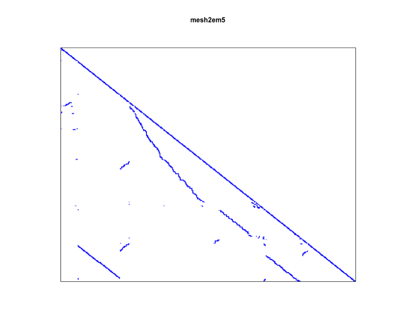
    </div>

    <h3 id="hexmap">Hexmap</h3>

    <p>Another variant is the hex map where hexagon cells replace rectangle cells.</p>

    <p>Use <a href="api/java/smile/plot/swing/Hexmap.html"><code>Hexmap</code></a> (Scala: <code>hexmap</code>) for hexagonal cells—common for SOM U-matrices.</p>

    <p>In machine learning, the hex map is often used to visualize self-organized map (SOM).
        An SOM is a type of artificial neural network that is trained using unsupervised learning to
        produce a low-dimensional (typically two-dimensional), discretized representation of
        the input space of the training samples. An SOM consists of components called nodes or neurons.
        Associated with each node are a weight vector of the same dimension as the input data vectors,
        and a position in the map space. The U-Matrix value of a particular node is the average distance
        between the node's weight vector and that of its closest neighbors. In practice, researchers
        often use the hex map to visualize the U-Matrix.</p>

    <p>In the following example, we train and visualize a SOM on the USPS training data set with <code>30 x 30</code>
        nodes.</p>

    <div class="code-playground glass" data-lang="java">
  <div class="playground-toolbar">
    <button type="button" class="lang-tab is-active" data-lang="java" data-pane="pg-21-0">Java</button>
    <button type="button" class="lang-tab" data-lang="scala" data-pane="pg-21-1">Scala</button>
    <span class="toolbar-spacer"></span>
    <button type="button" class="btn btn-ghost btn-sm playground-copy">Copy</button>
    {% include "components/playground-extra-actions.njk" %}
  </div>
    <div id="pg-21-0" class="hero-pane">
      <pre class="playground-source language-java"><code class="language-java">
    import org.apache.commons.csv.CSVFormat;
    import smile.vq.SOM;
    import smile.io.Read;
    import smile.math.MathEx;
    import smile.plot.swing.Hexmap;
    import smile.plot.swing.Palette;
    import smile.util.function.TimeFunction;
    import smile.vq.Neighborhood;

    var zip = Read.csv("data/usps/zip.train", CSVFormat.Builder.create().setDelimiter(' ').get());
    var x = zip.drop(0).toArray();
    var lattice = SOM.lattice(30, 30, x);
    var som = new SOM(lattice,
                TimeFunction.constant(0.1),
                Neighborhood.Gaussian(1, x.length * 10 / 4));

    for (int i = 0; i < 10; i++) {
        for (int j : MathEx.permutate(x.length)) {
            som.update(x[j]);
        }
    }

    var figure = Hexmap.of(som.umatrix(), Palette.heat(256)).figure();
    figure.show();
          </code></pre>
    </div>
    <div id="pg-21-1" class="hero-pane" hidden>
      <pre class="playground-source language-scala"><code class="language-scala">
    import smile.util.function._
    val zip = read.csv("data/usps/zip.train", delimiter = " ", header = false)
    val x = zip.drop(0).toArray()
    val lattice = SOM.lattice(30, 30, x)
    val som = new SOM(lattice,
                TimeFunction.constant(0.1),
                Neighborhood.Gaussian(1, x.length * 10 / 4))

    for (i <- 0 until 10) {
        MathEx.permutate(x.length).foreach { j =>
            som.update(x(j))
        }
    }

    show(hexmap(som.umatrix, Palette.heat(256)))
    </code></pre>
    </div>
  <div class="playground-editor" hidden></div>
</div>

    <p>In the hex map, areas of low neighbour distance indicate groups of nodes that are similar.
        Areas with large distances indicate the nodes are much more dissimilar, and indicate
        natural boundaries between node clusters.</p>

    <div style="width: 100%; display: inline-block; text-align: center;">
        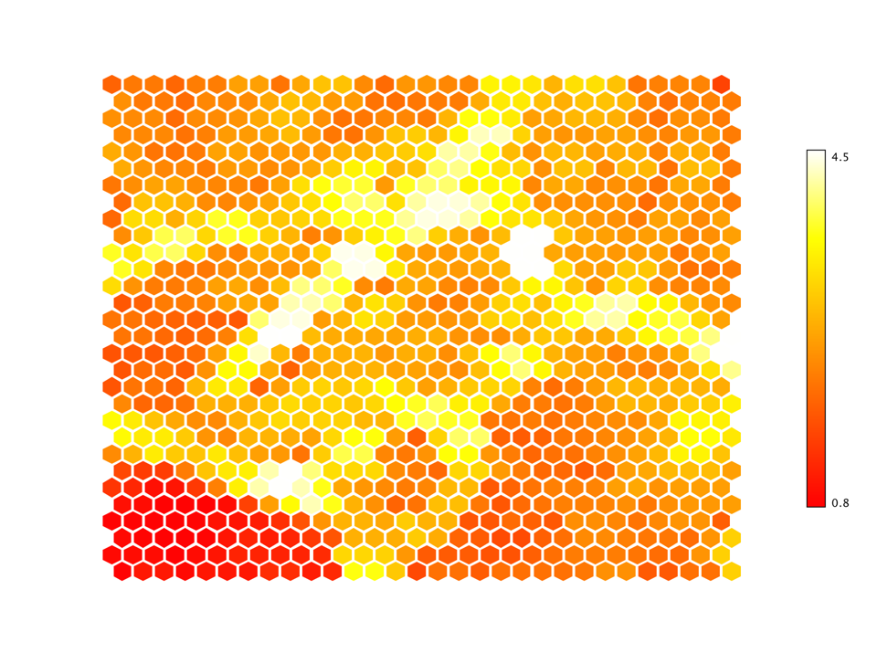
    </div>

    <h2 id="contour" class="title">Contour</h2>

    <p>A contour plot represents a 3-dimensional surface by plotting constant <code>z</code> slices, called contours,
        on a 2-dimensional format. That is, given a value for <code>z</code>, lines are drawn for connecting the
        <code>(x, y)</code> coordinates where that z value occurs.</p>

    <p>Use <a href="api/java/smile/plot/swing/Contour.html"><code>Contour</code></a> (Scala: <code>contour</code>).
        Optional ascending <code>x</code>/<code>y</code> locate matrix cells. In Java,
        <code>Contour.of(z, numLevels)</code> chooses evenly spaced levels; Scala also accepts an
        explicit <code>levels</code> array via <code>contour(z, levels)</code>.</p>

    <p>Contours are often layered on a heat map. The following adds contour lines to the
        previous heat map example.</p>

    <div class="code-playground glass" data-lang="java">
  <div class="playground-toolbar">
    <button type="button" class="lang-tab is-active" data-lang="java" data-pane="pg-23-0">Java</button>
    <button type="button" class="lang-tab" data-lang="scala" data-pane="pg-23-1">Scala</button>
    <span class="toolbar-spacer"></span>
    <button type="button" class="btn btn-ghost btn-sm playground-copy">Copy</button>
    {% include "components/playground-extra-actions.njk" %}
  </div>
    <div id="pg-23-0" class="hero-pane">
      <pre class="playground-source language-java"><code class="language-java">
    import smile.plot.swing.Contour;
    import smile.plot.swing.Heatmap;

    var figure = Heatmap.of(Z, 256).figure();
    figure.add(Contour.of(Z));
    figure.show();
          </code></pre>
    </div>
    <div id="pg-23-1" class="hero-pane" hidden>
      <pre class="playground-source language-scala"><code class="language-scala">
    val canvas = heatmap(Z, Palette.jet(256))
    canvas.figure().add(Contour.of(Z))
    show(canvas)
    </code></pre>
    </div>
  <div class="playground-editor" hidden></div>
</div>

    <p>This shows how to compose plots: build a figure from one plot, then
        <code>figure.add(...)</code> additional shapes such as contours.</p>

    <div style="width: 100%; display: inline-block; text-align: center;">
        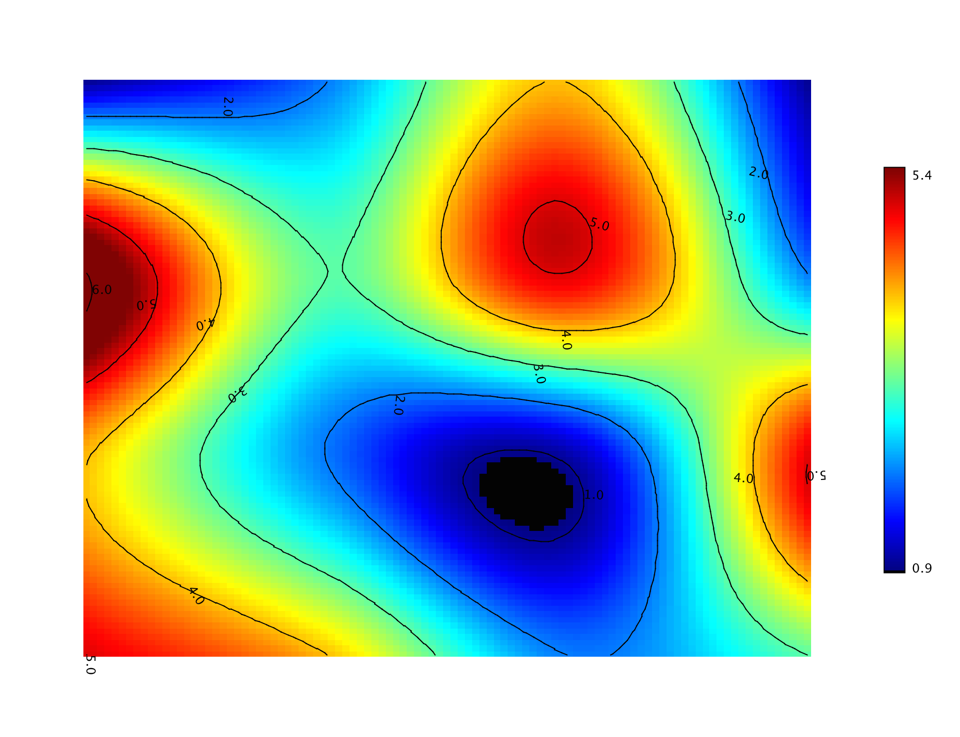
    </div>

    <h2 id="surface" class="title">Surface</h2>

    <p>Besides heat map and contour, we can also visualize a matrix with the three-dimensional shaded surface.</p>

    <p>Use <a href="api/java/smile/plot/swing/Surface.html"><code>Surface</code></a> (Scala: <code>surface</code>)
        with a color palette (as below) or a color count <code>k</code>. Optional <code>x</code>/<code>y</code>
        locate the surface samples. There is no single-argument <code>Surface.of(z)</code>.</p>

    <div class="code-playground glass" data-lang="java">
  <div class="playground-toolbar">
    <button type="button" class="lang-tab is-active" data-lang="java" data-pane="pg-25-0">Java</button>
    <button type="button" class="lang-tab" data-lang="scala" data-pane="pg-25-1">Scala</button>
    <span class="toolbar-spacer"></span>
    <button type="button" class="btn btn-ghost btn-sm playground-copy">Copy</button>
    {% include "components/playground-extra-actions.njk" %}
  </div>
    <div id="pg-25-0" class="hero-pane">
      <pre class="playground-source language-java"><code class="language-java">
    import smile.plot.swing.Palette;
    import smile.plot.swing.Surface;

    var figure = Surface.of(Z, Palette.jet(256, 1.0f)).figure();
    figure.show();
          </code></pre>
    </div>
    <div id="pg-25-1" class="hero-pane" hidden>
      <pre class="playground-source language-scala"><code class="language-scala">
    show(surface(Z, Palette.jet(256, 1.0f)))
    </code></pre>
    </div>
  <div class="playground-editor" hidden></div>
</div>

    <p>The surface of same example data is shown as</p>

    <div style="width: 100%; display: inline-block; text-align: center;">
        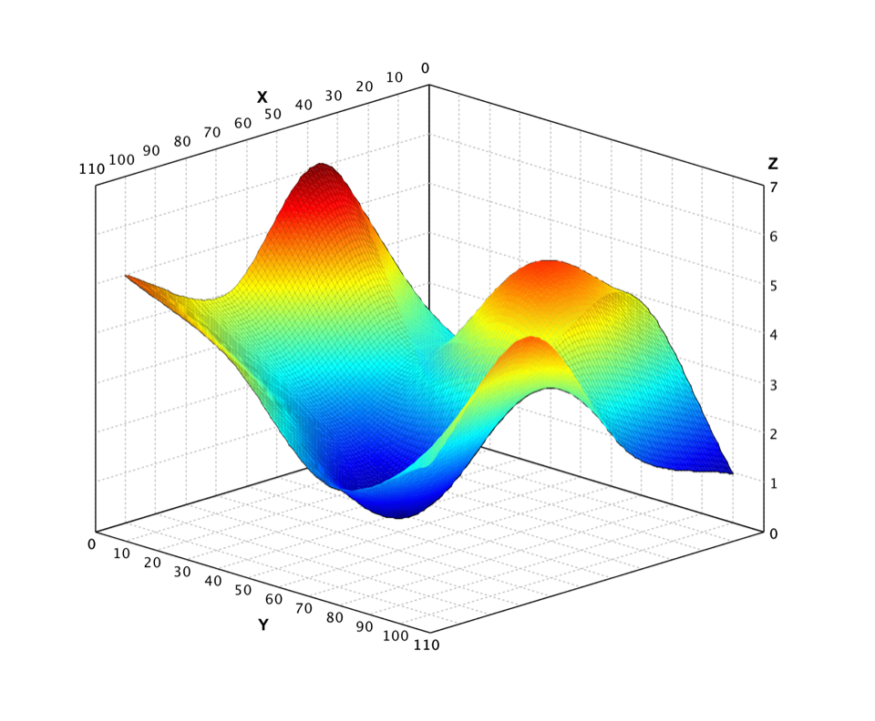
    </div>

    <h2 id="wireframe" class="title">Wireframe</h2>

    <p>A wireframe presents a 3D object with a vertex table and an edge table.
        Each vertex stores coordinates; each edge references two vertices.</p>

    <p>Use <a href="api/java/smile/plot/swing/Wireframe.html"><code>Wireframe</code></a>
        (<code>Wireframe.of(vertices, edges)</code>) with vertex and edge tables.
        In Scala, <code>read.wavefront</code> loads Wavefront OBJ files into those tables.
        <code>vertices</code> is an <code>n × 2</code> or <code>n × 3</code> coordinate array;
        <code>edges</code> is an <code>m × 2</code> array of vertex index pairs.</p>

    <div class="code-playground glass" data-lang="scala">
  <div class="playground-toolbar">
    <span class="lang-tab is-active">Scala</span>
    <span class="toolbar-spacer"></span>
    <button type="button" class="btn btn-ghost btn-sm playground-copy">Copy</button>
    {% include "components/playground-extra-actions.njk" %}
  </div>
  <pre class="playground-source language-scala"><code class="language-scala">
    val (vertices, edges) = read.wavefront("data/wavefront/teapot.obj")
    show(wireframe(vertices, edges))
    </code></pre>
  <div class="playground-editor" hidden></div>
</div>

    <p>The above code draws the wireframe of a teapot.</p>

    <div style="width: 100%; display: inline-block; text-align: center;">
        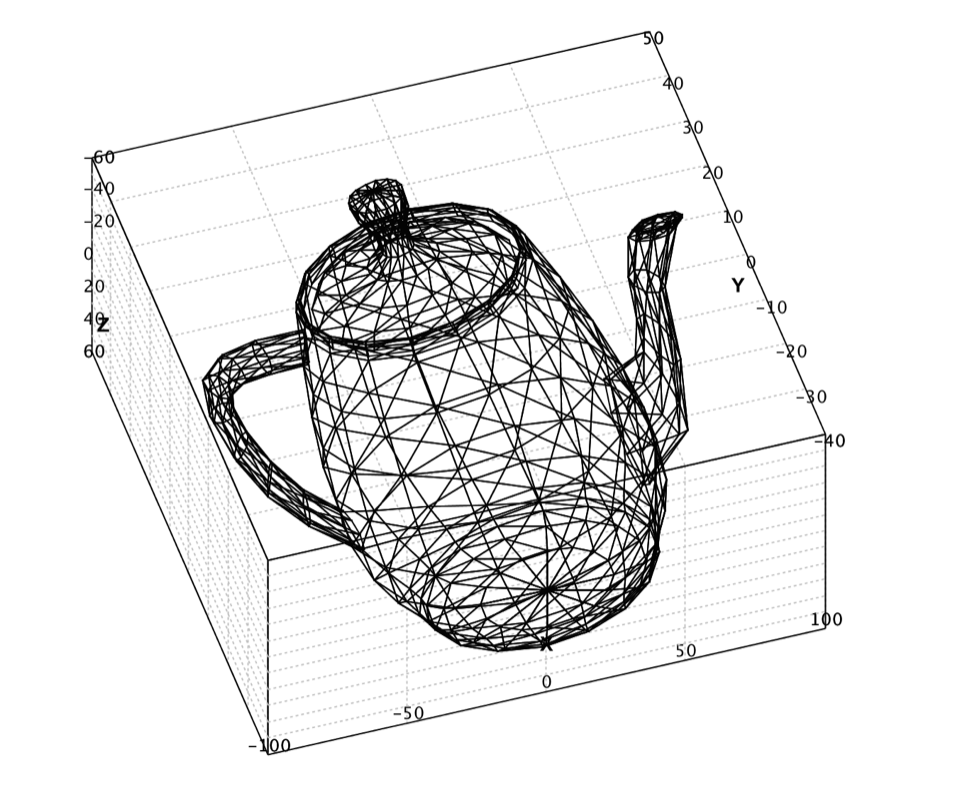
    </div>

    <div id="btnv">
        <span class="btn-arrow-left">&larr; &nbsp;</span>
        <a class="btn-prev-text" href="data-io.html" title="Previous Section: Data Import and Export"><span>Data Import and Export</span></a>
        <a class="btn-next-text" href="vegalite.html" title="Next Section: Declarative Visualization"><span>Declarative Visualization</span></a>
        <span class="btn-arrow-right">&nbsp;&rarr;</span>
    </div>
</div>
